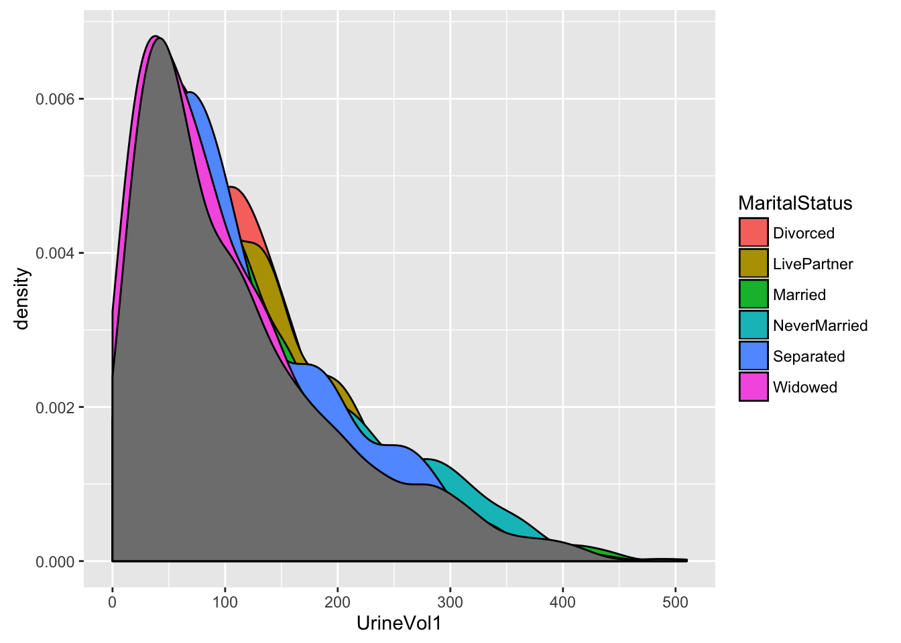

§ 37 Statistics: Collective properties of data
Whenever you use summarise() you are reducing a set of cases into a single case. That single case reflects the collective properties of the cases. For instance, you might calculate the mean of some quantity. That mean takes in the values for all of the cases. Even when you are finding the value for a single case, say the one with the maximum value, that case is the maximum only with respect to the other cases. If those cases had been different, the max might change.
Of course, we intend the summary to be representative of the cases being summarized, particularly when the quantity being calculated is meant to describe a “typical” value for all of the cases. That being the case, it’s fair to ask how representative that summary is of the set of cases, or how well that summary represents the cases. This is a central issue in basic statistics. Statistics provides a framework for approaching that question of how representative a summary is.
To illustrate, let’s look at how people rate movies.
The three data tables in the MovieLens.rda file comprise a set of 100,000 ratings of movies by individuals. These data were collected in the late 1990s by the grouplens research team at the University of Minnesota. Grouplens provides the data directly at http://grouplens.org/datasets/movielens/100k/. MovieLens.rda is a reformatting of the data that makes the file substantially smaller. You can access the file in this way.
Once the data are downloaded, you can use load() to bring the data tables into your R session.
MovieLens.rda contains three data tables:
Ratingshas the individual movie ratings and the time at which they were entered. It also includes an ID variable for both the user and the movie.Moviesprovides the name of the movie and information about genres.Usersgives basic information about the person who made the rating.
37.1 The mean as a summary
Calculating the mean rating is easy:
So how representative is the mean rating? One way to assess this is to display the distribution of ratings: 
The mean value, 3.52986, falls right in the middle of this distribution.
One way to assess the representativeness of the mean is to calculate an auxiliary statistic that summarizes how far from the mean a typical case is. The standard way to measure this typical deviation from the mean is called the standard deviation and is computed with the sd() reduction function.
The typical rating is within about 1.1 points of the mean.
Statisticians compute another statistic to indicate how uncertain the mean is. The uncertainty doesn’t arise from the calculation itself — computer calculations such as mean() are very reliable. The uncertainty refers to a kind of thought experiment.
Suppose that a much larger set of ratings had been collected, from a much larger group of people. Imagine that the particular cases we are working with in Ratings were a random choice from this much larger set. And then imagine that many other, similar datasets were created, each of which is a random selection from the much larger dataset. The means calculated from these many different datasets would presumably differ from the one we get from our particular set in Ratings. The uncertainty refers to how much the means would differ among the hypothetical, thought-experiment data sets.
The most common statistical measure of this uncertainty of the mean is called the “standard error of the mean.” Perhaps surprisingly, there is a simple method to calculate the standard error of the mean even without having to generate a new data set.
The value of the standard error of the mean is very small compared to the mean. Statisticians display the uncertainty with an interval of \(\pm 2\) times the reliability around the mean, in other words, \(3.530 \pm 0.007\). Note that the values have been somewhat rounded. As a rule, there’s very little meaning to the second (non-zero) digit of the standard error. And there’s no point in reporting the mean itself to a precision that goes beyond that of the standard error.
We could reasonably call this interval the “uncertainty interval.” But the standard term for it in statistics is the “confidence interval”
Why should we care about the uncertainty of the mean? The typical situation where this is an issue is when we are comparing two means to see whether they are different. For instance, let’s see if women and men have different mean movie ratings. To start, we need to identify each rating with the sex of the rater.
Now we’re in a position to compute the mean for each sex, together with the uncertainty in those means.
The means for men and women are a bit different — women give higher ratings by 0.0023. But look at the reliabilities. They are larger than the difference in means. This suggests that although the precise numerical value of the means is different, the difference is itself not reliable. It might as well be zero!
Plotting out the means along with their uncertainties.
There is a standard format for graphing the means and their uncertainties that involve a glyph called an “error bar.” 
As always when reading a graph, note the scales.
Many people mistakenly interpret a plot like this as indicating the range of ratings themselves, rather than the uncertainty in the mean rating. So it can be helpful to display the distribution of the ratings themselves on the same graph.

Again, note the scales. You can see that the uncertainty in the mean is much, much smaller than the distribution of ratings.
Activity
Find the means broken down by sex and movie genre. Do the sexes rate individual genres differently?
Think carefully about how you are going to combine the genre information with the ratings. Movies often fall into more than one genre. In calculating the means, you might want to create a new case of the values in Ratings for each of the genres of a movie.
Read each of the following chunks and say what it is doing.

37.2 Continuous explanatory variables
In the previous, we broke down the ratings by sex and genre. But maybe age is an important determinant of opinion.
In these chunks, we simply add age as another grouping variable when computing the mean and the uncertainty in the mean.
In plotting this, what roles would you assign to each of the variables?

How could you simplify this plot?
Let’s focus on just a few genres, the ones that showed large differences between the sexes.

One of the problems with this plot is that the error bars are much larger than they were in some of the previous plots. This makes it hard to see differences between the sexes. Why this growth in the error bars? Because we’ve divided the data up into about 50 different ages. Roughly, this means that each error bar is based on about 1/50th as much data. Since the uncertainty goes as \(1/\sqrt(n)\), this means that the error bars will be about \(\sqrt{50} \approx 7\) times bigger than before. You could fix this by, say, dividing up into just a few age groups.
A statistical method called “regression” enables the mean rating to be assessed by age without having to break up age into any groups at all. In the next plot, we’ll use a regression method called “smoothing” to do this, transforming the error bars into error bands.

Look at the film-noir genre. Men’s mean ratings are high and go up over the years. For women, the pattern is different. They don’t like film-noir as much as men, except around age 40. (Note: These data are not tracing individual people as they age. Instead, these are different people who were born at different years.)
Project idea: How do ratings compare by month or time of day? Is it possible to tell whether the times of day are keyed to the local clock time, or the time at which the database server received the information.
37.3 Correlations
Another very important technique in introductory statistics involves “correlation.”
Consider three situations about how two different variables might relate to one another:
- When one variable is up, the other one tends to be up as well. This is called a “positive correlation.”
- When one variable is up, the other could equally well be up or down. This is called “uncorrelated.”
- When one variable is up, the other one tends to be down. This is called a “negative correlation.”
Now “tends to” can be a matter of degree. The correlation coefficient indicates how strong the tendency is on a scale of zero to 1. Zero means uncorrelated. One means “exactly in line with one another.” The sign on the correlation coefficient indicates whether the correlation is positive or negative. If the variables are uncorrelated, the correlation coefficient is near zero.
To illustrate, let’s look at the correlation between musical and war genres, and also the correlation between crime and film-noir genres. We’ll base the correlation on whether the genres are aligned from movie to movie.
It looks like being a war movie tells you nothing about whether it is a musical, while being a crime movie tells a bit about whether it is also a film-noir.
It’s also possible to calculate an uncertainty in the correlation coefficients. This can help in deciding whether to treat the correlation as different from zero.
There’s no reason in these data to believe that the correlation between war and musical genres is anything but zero. In contrast, crime and film-noir have a positive correlation, but nowhere near perfect correlation.
37.4 A primitive display of genre correlations

37.5 A network display
As a network